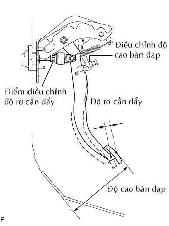
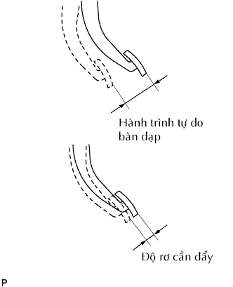
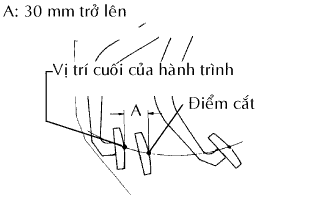

BÀN ĐẠP LI HỢP > ĐIỀU CHỈNH |
| 1. KIỂM TRA VÀ ĐIỀU CHỈNH BÀN ĐẠP LI HỢP |
Lật thảm trải sàn để lộ tấm nhựa dưới bàn đạp.
|  |
Kiểm tra rằng chiều cao bàn đạp đã chính xác.
Kiểm tra chiều cao bàn đạp.
Nới lỏng đai ốc hãm và vặn bu lông hãm cho đến khi chiều cao bàn đạp nằm trong phạm vi tiêu chuẩn.
Xiết chặt đai ốc hãm.
|  |
Kiểm tra hành trình tự do của bàn đạp và độ rơ của cần đẩy.
Đạp bàn đạp li hợp cho đến khi cảm nhận được có lực cản.
Đo khoảng cách giữa vị trí nhả bàn đạp và vị trí nhấn trước đó.
Nhả bàn đạp. Dùng ngón tay, ấn nhẹ lên bàn đạp cho đến khi thấy lực cản tăng nhẹ.
Đo khoảng cách giữa vị trí nhả bàn đạp và vị trí nhấn trước đó.
Điều chỉnh hành trình tự do của bàn đạp và của cần đẩy.
Nới lỏng đai ốc hãm và vặn cần đẩy cho đến khi hành trình tự do bàn đạp và độ rơ của cần đẩy như tiêu chuẩn.
Xiết chặt đai ốc hãm.
Sau khi điều chỉnh hành trình tự do của bàn đạp, kiểm tra chiều cao bàn đạp.
|  |
Kiểm tra điểm cắt li hợp.
Hãy kéo cần phanh tay và dùng các miếng chèn để cố định xe.
Khởi động động cơ và để nó chạy không tải.
Không đạp bàn đạp li hợp, dịch chuyển chậm cần chuyển số vào vị trí R cho đến khi các bánh răng tiếp xúc.
Đạp từ từ bàn đạp li hợp và đo khoảng cách hành trình từ điểm mà tiếng kêu bánh răng tắt (điểm cắt li hợp) đến vị trí cuối hành trình.